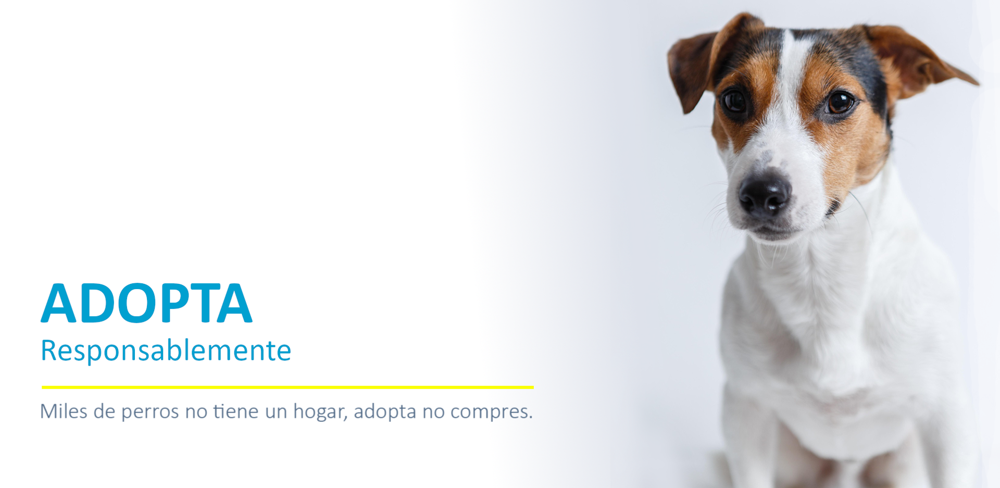
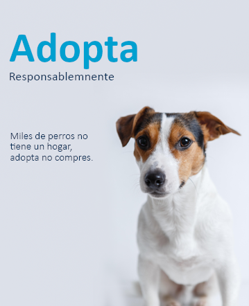

Algunos perros en adopción fueron abandonados por sus antiguos dueños. Puede haber varias razones detrás de esto, como cambios en las circunstancias personales de los dueños, dificultades económicas o problemas de salud. Estos perros merecen una segunda oportunidad porque no tienen la culpa de la situación en la que se encuentran y aún tienen mucho amor y afecto para dar.